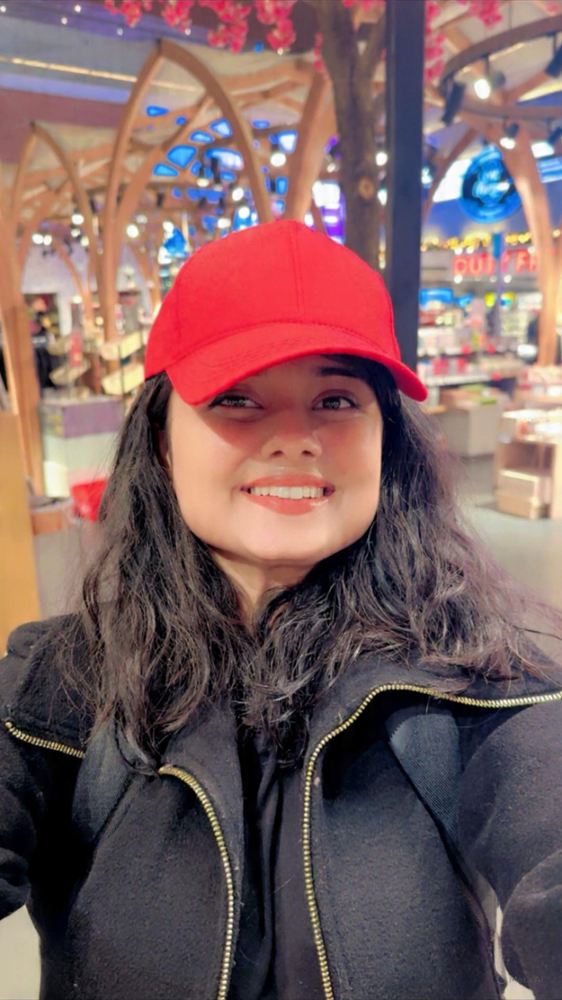

3rd-Year PhD · Computer Science
Hi, I'm Shivangi.
I'm a doctoral researcher at Texas State University, working in the Human AI Synergy Lab under Dr. Heena Rathore. My research centers on making large language models and vision-language models more trustworthy — from detecting and mitigating hallucinations to understanding failure modes under adversarial attacks and building reliable evaluation frameworks for real-world deployment.

Recent Publications
Selected peer-reviewed publications and conference proceedings.
- Detecting and Correcting Hallucinations in Paragraph-Level Text with Ensemble-Based Evaluation IEEE DISTILL, 2025
- Paragraph-Level Hallucination Detection for LLMs in Networked Systems Proceedings of IEEE CCNC, 2026
- REVISE: A Framework for Paragraph-Level Misinformation Correction in Large Language Models Proceedings of CIOCSE, 2025
- Assessing Hallucination in LLMs under Adversarial Attacks Proceedings of MOBISECSERV, 2024
Education
Academic training across AI, signal processing, and engineering.
Ph.D. in Computer Science
Texas State University · Aug 2023 – Present (Expected 2027)
- Lab: Human AI Synergy Lab
- Advisor: Dr. Heena Rathore
- Focus: Machine Learning, LLM Security, Hallucination Detection, Trustworthy NLP
M.S. in Electrical Engineering
IIT Jodhpur · Jul 2021 – Jul 2023
- Focus: Cyber-Physical Systems, 6G Networks, ML for Communications
B.Tech in Electronics & Communication Engineering
GGSIPU, Delhi · Aug 2017 – May 2021
Research Experience
Key roles and contributions.
Doctoral Instructional Assistant / Researcher
Human AI Synergy Lab, Texas State University · San Marcos, TX
- Designed and evaluated hallucination detection and mitigation pipelines with measurable reliability improvements.
- Built reproducible ML experiments in Python using PyTorch, TensorFlow, and Hugging Face for controlled benchmarking.
- Analyzed adversarial robustness and failure modes to inform evaluation criteria and mitigation strategies.
Research Assistant
Wireless Communications Lab, IIT Jodhpur · Jodhpur, India
- Developed and simulated joint resource allocation algorithms for 6G networks under mobility and latency constraints.
- Implemented MIMO configurations and quantified Doppler impacts using signal processing and linear algebra.
- Designed optimization strategies for mission-critical Mobile Edge Computing (MEC) applications.
Selected Projects
High-impact research and engineering highlights.
Paragraph-Level Misinformation Correction for LLMs
Jun 2024 – Dec 2025
- Built a pipeline: sentence decomposition → verification QG → evidence retrieval → context-aware revision.
- Achieved 76.8% correction accuracy while maintaining FactCC > 0.97 across 1,400+ passages.
Hallucination Under Adversarial Attacks
Aug 2023 – May 2024
- Implemented prompt-based attacks to induce hallucinations under controlled evaluation settings.
- Observed attack success rates of up to 92.53% (weak semantic) and 88.68% (OoD).
Extractive Question Answering Models
Sep 2024 – Dec 2024
- Implemented LSTM, custom Transformer, and fine-tuned BERT in PyTorch on SQuAD and Natural Questions.
- Achieved up to 83% F1, outperforming TF-IDF baselines by over 20%.
Resource Allocation for 6G Networks
Jun 2022 – Jul 2023
- Modeled dynamic uplink/downlink resource sharing in MATLAB/Simulink for high-mobility scenarios.
- Improved BER by 30% and spectral efficiency by 25%.
Hobbies
Outside of research.
When I'm not in the lab, I enjoy staying active and exploring new experiences. I love hiking, playing badminton, and attending dance workshops — activities that keep me energized and present.
Lately, I've been developing a new interest in landscape photography — capturing natural light, open skies, and quiet outdoor spaces.
Contact
For research collaboration, internship opportunities, or academic discussions.
Email
tjk86@txstate.edu
LinkedIn
shivangi-tripathi-62581415b
Google Scholar
View Profile